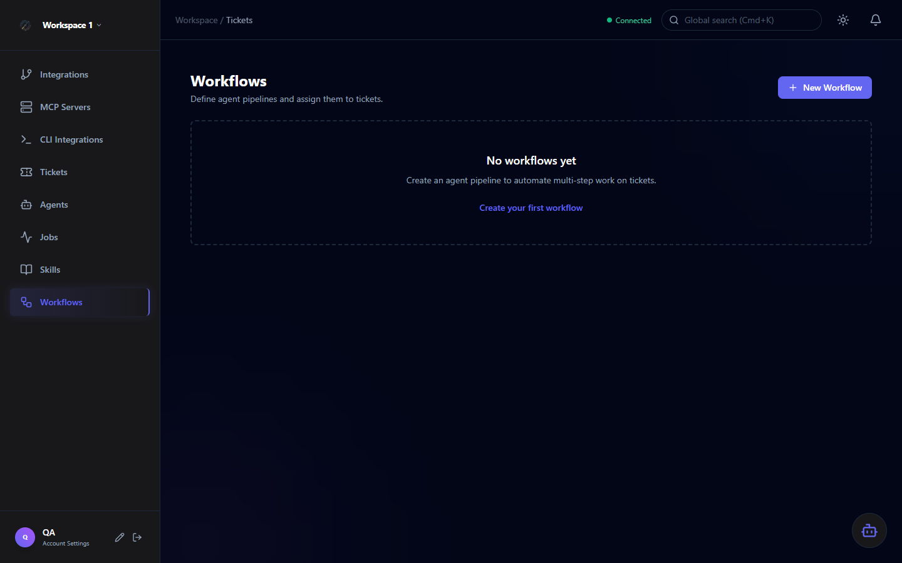

Workflows
Workflows let you chain multiple agents together into automated pipelines. Use the visual canvas to define triggers, conditional branches, and sequential agent handoffs — then track per-step execution status in real time.

Visual Workflow Builder
Workflows are built on a React Flow canvas. Nodes represent actions and agents; edges define the execution order and conditions. The builder supports drag-and-drop node placement with snap-to-grid alignment.
Use case example: A typical SDLC workflow might look like: Trigger (new Jira ticket) → Coding Agent → Code Review Agent → Update Jira status. Each stage waits for the previous one to complete.
Node Types
Defines what starts the workflow. Triggered manually or by an event such as a new ticket matching certain criteria (status, priority, label).
Executes a deployed agent as a workflow step. The agent receives the ticket context from the trigger and produces output passed to the next node.
Branches the workflow based on a rule (e.g., if agent output contains "pass", route to Done; otherwise route to review queue).
Marks the terminal state of a workflow branch. Can trigger a status update on the originating ticket.
Execution Tracking
Each workflow execution creates a Job per agent node. All steps appear in the Jobs view, showing per-step status so you can see exactly where the workflow is and what each agent did.
| Status | Meaning |
|---|---|
| Pending | Step queued, waiting for the previous node to complete |
| Running | Agent is actively executing this step |
| Completed | Step finished successfully; output passed to next node |
| Failed | Step encountered an error; workflow halted at this node |